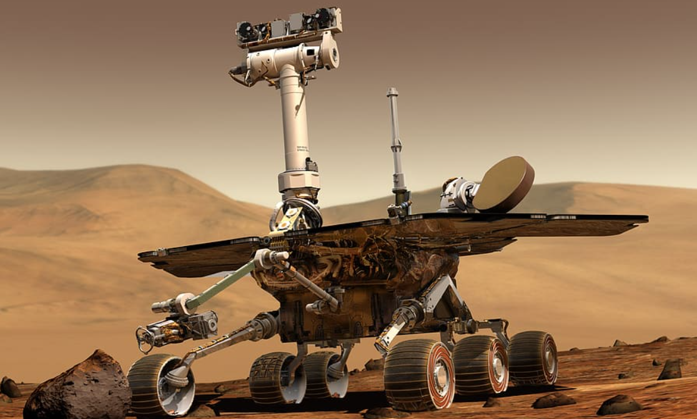

About Rovers
Sojourner, a six-wheeled robot, became the first rover built and sent by NASA to successfully explore Mars. Since then, NASA has sent four more rovers, each cooler and more intricate than the previous, to check out what's happening on the Red Planet. Guess what? Curiosity celebrated its 10th birthday on August 5, just cruising around up there. Then there's Perseverance, currently on a rock-collecting mission for future robot pals to bring back to Earth. Recently, China joined the Mars exploration party and landed its own rover, Zhurong, three years ago.
Sojourner (1997)
This little rover was the first ever rover to land and become operated on Mars. Landing this over was initially a test mission to determine if sending rovers on Mars was viable or not. Before reaching its end, it analyzed the chemical composition of 15 Martian rocks and assessed the friction of the Martian soil. Sojourner surprisingly survived for 11 weeks before succumbing to the extreme cold of Mars
Spirit (2004–2010)
Spirit became an evolved version of Sojourner, equipped with robotic arms, enabling them to conduct increasingly advanced scientific tasks. Their enhanced capabilities included high-quality cameras, three spectrometers, and a rock-grinding tool to unveil and comprehend Mars' textures. Spirit made an amazing discovery of rocks showing to have been ran through by water in the past.

Opportunity (2004–2018)
Opportunity made a remarkable discovery, proving that water existed on Mars. The rover unveiled indications of liquid water at different parts in time in Mars' history. While Spirit had shown that there may have been signs of water on Mars, Opportunity discovered hard evidence that liquid water had resided on Mars. Impressively, this rover exceeded all previous benchmarks by covering greater distances than any prior rover. By 2015, it achieved a distance of 26.2 miles.
Curiosity (2012–present)
Curiosity is one of the largest rovers, sharing nearly the same dimensions as a sports car. An evolutionary addition of the advanced robotic arm enabled more intricate investigations. Additionally, the rover implemented a new system for its power source. Electricity for the rover was generated through the radioactive decay of plutonium. After nearly a decade, Curiosity remains operational. Its biggest discovery is an ancient lake that fostered life-friendly conditions for potentially thousands of years. Not only that, but Curiosity also discovered a range of molecules that showed that Mars has been habitable for millions of years.

Perseverance (2021–present)
Extremely similar to Curiosity, Perseverance has some additional enhancements. NASA incorporated cutting-edge drilling technology that allows it to collect and preserve thin rock cores. The main objective of its mission revolves around collecting Martian rock samples from expeditions and transporting them to Earth. It has achieved a historic milestone as the initial robotic retrieval of samples from Mars. This process will enable precise age determination of igneous rocks by utilizing the radioactive decay of chemical elements, enabling us to determine the exact lifespan of a rock on a certain location on Mars.
See Perseverance in action:
Zhurong (2021–present)
Zhurong is managed by the China National Space Administration, and is actively roaming on Utopia Planitia, an small region on Mars' northern hemisphere. In terms of size and mobility, Zhurong shares similarities with Spirit and Opportunity. The rover found that the Martian soil in Utopia Planitia shares resemblances with specific desert sands on Earth. Moreover, there is evidence pointing towards the potential presence of water in the region, perhaps as recently as 700 million years ago. This rover, along with Curiosity and Perseverance, is still active today.
